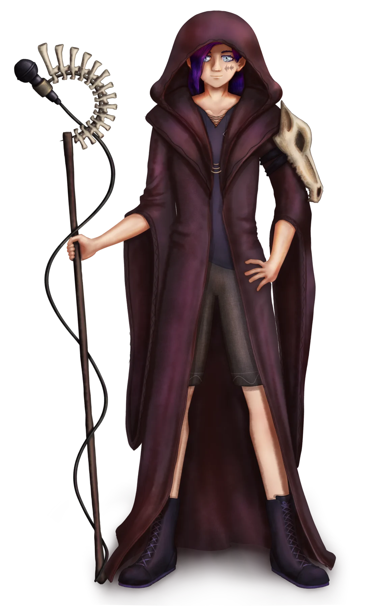
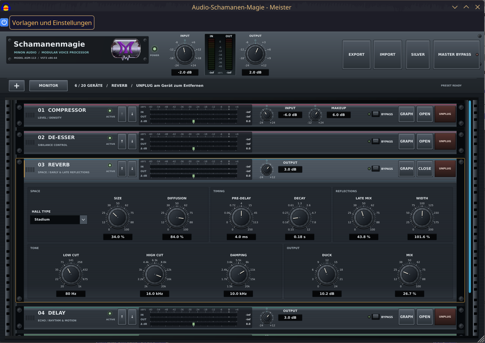

A
Mikro & Stimme
Mikrofonpegel, Filter, EQ, Dynamik und VST-Plugins.
GAIN / EQ / DYNAMIK / VSTAUDIOHILFE FÜR VTUBER
Ich unterstütze VTuber und Twitch-Streamer bei Mikrofon, Audio-Routing, OBS und Elgato Wave Link.

48 KHZ / 24 BIT
VOICE CHAIN: ACTIVE
02 / AUDIOHILFE
Hilfe bei der Einrichtung und bei Fehlern in bestehenden Streaming-Setups.
Mikrofonpegel, Filter, EQ, Dynamik und VST-Plugins.
GAIN / EQ / DYNAMIK / VSTAudioquellen, Monitoring, getrennte Tonspuren und Aufnahmen.
QUELLEN / MONITORING / SPURENEin- und Ausgänge, Monitor Mix, Stream Mix und virtuelle Kanäle.
ROUTING / MIXES / KANÄLE03 / EIGENES VST
Schamanenmagie ist mein modulares VST3-Plugin für Sprachbearbeitung. Es enthält 20 Module, Preset-Verwaltung und Monitoring.
Informationen zur Verfügbarkeit gibt es auf Discord.

04 / DISCORD